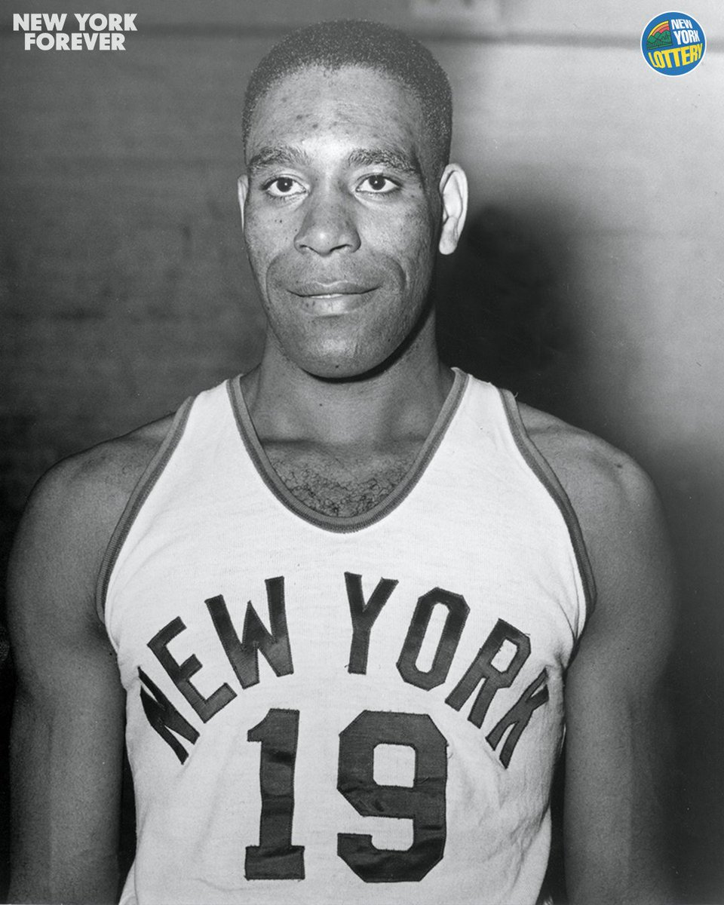

Pour la saison 1950-51, les Knicks font signer le premier joueur noir américain de la ligue : Nathaniel Clifton. Sans Braun, parti faire son service militaire, et en dépit d’un bilan de 36 victoires pour 30 défaites à la fin de la saison régulière, les Knicks parviennent jusqu’en finales NBA face aux Royals de Rochester. Qu’ils perdent dans une série de 7 matchs. es deux saisons suivantes, les Knicks atteignent de nouveau les finales NBA, grâce à des joueurs tels que Harry Gallatin, Dick McGuire et Carl Braun, pour perdre à chaque fois contre les Lakers de Minneapolis. De la saison 1953 à la saison 1959 les knicks parviennent aux playoffs sans pouvoir y jouer les finales . La sélection de Willis Reed à la draft 1964 va enfin permettre aux Knicks de décoller. Son impact est immédiat : le pivot est élu rookie de l’année et les Knicks remportent pour la première fois en 5 ans plus de 30 victoires en saison régulière. Le bilan de 31 victoires pour 49 défaites ne permet certes pas à New York de rallier les play-offs, mais les Knicks semblent enfin être sur la bonne voie. Deux ans plus tard, en 1966-67, les Knicks retrouvent les play-offs, emmenés par Willis Reed .
